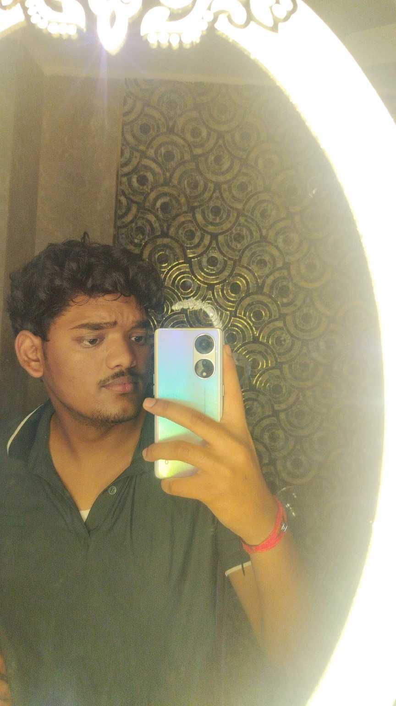

BS / AI & DATA SCIENCE · CLASS OF 2030
IIT Jodhpur
Pursuing a Bachelor of Science in Artificial Intelligence & Data Science. Building my foundations in programming, mathematics, data, and AI.
HELLO, WORLD. I’M AI & DATA SCIENCE
Curiosity, turned into code.
Exploring what happens when
human ideas meet artificial intelligence.

Hey, I’m Ujjwal — a first-year student with a love for technology and a habit of asking, “How does that work?”
I’m pursuing a BS in AI & Data Science at IIT Jodhpur and a Mini MBA at Zenith School of AI. I’m drawn to the code behind the experience: how data moves, how AI finds an answer, and how an idea becomes something you can actually use.
From PDF chatbots to AI movie trailers and Arduino experiments, I’m learning by making things, getting stuck, and figuring them out.
Download my résuméAI, games, hardware, and data.
Every project teaches me something.
Showing all 9 projects
Side projects, experiments, and coursework. All part of learning.
Find me on GitHubBuilding a foundation in technology,
and learning how to put it to work.
Become a software engineer.
Build useful things.
Keep asking better questions.
BS / AI & DATA SCIENCE · CLASS OF 2030
Pursuing a Bachelor of Science in Artificial Intelligence & Data Science. Building my foundations in programming, mathematics, data, and AI.
MINI MBA & APPLIED LEARNING
Exploring practical AI, robotics, and creative technology — alongside business, leadership, and strategy.
The next chapter is still being written.
A new idea. A student collaboration. A good conversation.
Whatever it is, let’s make something happen.